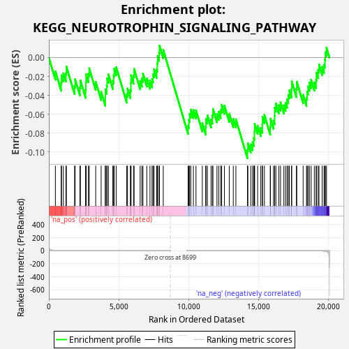
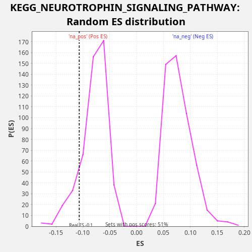

| Dataset | rnk |
| Phenotype | NoPhenotypeAvailable |
| Upregulated in class | na_neg |
| GeneSet | KEGG_NEUROTROPHIN_SIGNALING_PATHWAY |
| Enrichment Score (ES) | -0.10675316 |
| Normalized Enrichment Score (NES) | -1.3481596 |
| Nominal p-value | 0.1352459 |
| FDR q-value | 0.38101763 |
| FWER p-Value | 1.0 |

| SYMBOL | RANK IN GENE LIST | RANK METRIC SCORE | RUNNING ES | CORE ENRICHMENT | |
|---|---|---|---|---|---|
| 1 | FRS2 | 469 | 3.198 | -0.0146 | No |
| 2 | MAPK14 | 882 | 1.224 | -0.0264 | No |
| 3 | PIK3R1 | 905 | 1.190 | -0.0186 | No |
| 4 | RAP1B | 1040 | 0.946 | -0.0165 | No |
| 5 | NFKBIE | 1222 | 0.715 | -0.0167 | No |
| 6 | BAD | 1255 | 0.676 | -0.0095 | No |
| 7 | PRKCD | 1842 | 0.319 | -0.0299 | No |
| 8 | RIPK2 | 1881 | 0.306 | -0.0230 | No |
| 9 | CAMK2G | 2224 | 0.220 | -0.0313 | No |
| 10 | IKBKB | 2258 | 0.214 | -0.0241 | No |
| 11 | YWHAB | 2631 | 0.153 | -0.0338 | No |
| 12 | NFKBIB | 2650 | 0.150 | -0.0259 | No |
| 13 | RAC1 | 2665 | 0.149 | -0.0177 | No |
| 14 | BAX | 2830 | 0.129 | -0.0171 | No |
| 15 | IRAK4 | 2893 | 0.123 | -0.0113 | No |
| 16 | RAP1A | 3354 | 0.083 | -0.0255 | No |
| 17 | RELA | 3745 | 0.061 | -0.0362 | No |
| 18 | MAPK13 | 4043 | 0.048 | -0.0422 | No |
| 19 | BCL2 | 4049 | 0.048 | -0.0336 | No |
| 20 | MAP3K1 | 4145 | 0.045 | -0.0295 | No |
| 21 | CAMK2B | 4173 | 0.044 | -0.0220 | No |
| 22 | RPS6KA1 | 4268 | 0.040 | -0.0179 | No |
| 23 | NTF3 | 4579 | 0.032 | -0.0245 | No |
| 24 | PLCG2 | 4639 | 0.030 | -0.0186 | No |
| 25 | PDPK1 | 4679 | 0.029 | -0.0117 | No |
| 26 | NGF | 4823 | 0.025 | -0.0100 | No |
| 27 | NFKBIA | 5578 | 0.013 | -0.0389 | No |
| 28 | RPS6KA5 | 5633 | 0.012 | -0.0328 | No |
| 29 | SHC1 | 5838 | 0.010 | -0.0341 | No |
| 30 | PIK3CD | 5877 | 0.010 | -0.0272 | No |
| 31 | PSEN1 | 5884 | 0.010 | -0.0186 | No |
| 32 | KRAS | 6064 | 0.008 | -0.0188 | No |
| 33 | MAPK10 | 6107 | 0.008 | -0.0120 | No |
| 34 | MAPKAPK2 | 6538 | 0.005 | -0.0247 | No |
| 35 | MAP3K5 | 6662 | 0.004 | -0.0220 | No |
| 36 | GRB2 | 6740 | 0.004 | -0.0170 | No |
| 37 | MAPK7 | 7016 | 0.003 | -0.0219 | No |
| 38 | SH2B1 | 7242 | 0.002 | -0.0243 | No |
| 39 | AKT1 | 7390 | 0.002 | -0.0228 | No |
| 40 | ATF4 | 7463 | 0.001 | -0.0176 | No |
| 41 | CRK | 7534 | 0.001 | -0.0122 | No |
| 42 | PIK3CA | 7722 | 0.001 | -0.0127 | No |
| 43 | PTPN11 | 7766 | 0.001 | -0.0060 | No |
| 44 | BRAF | 7790 | 0.001 | 0.0017 | No |
| 45 | MAPK9 | 7896 | 0.000 | 0.0053 | No |
| 46 | RPS6KA6 | 7922 | 0.000 | 0.0129 | No |
| 47 | MAGED1 | 8194 | 0.000 | 0.0081 | No |
| 48 | SORT1 | 9971 | -0.000 | -0.0719 | No |
| 49 | PRDM4 | 10030 | -0.000 | -0.0659 | No |
| 50 | ARHGDIB | 10083 | -0.000 | -0.0597 | No |
| 51 | SHC3 | 10167 | -0.000 | -0.0550 | No |
| 52 | MAPK1 | 10352 | -0.000 | -0.0554 | No |
| 53 | RHOA | 10538 | -0.000 | -0.0558 | No |
| 54 | NRAS | 10991 | -0.001 | -0.0695 | No |
| 55 | CALM3 | 11235 | -0.002 | -0.0729 | No |
| 56 | CALM2 | 11254 | -0.002 | -0.0649 | No |
| 57 | AKT2 | 11356 | -0.002 | -0.0611 | No |
| 58 | BDNF | 11618 | -0.003 | -0.0653 | No |
| 59 | AKT3 | 11712 | -0.003 | -0.0611 | No |
| 60 | YWHAZ | 11753 | -0.003 | -0.0543 | No |
| 61 | PLCG1 | 12040 | -0.005 | -0.0597 | No |
| 62 | ZNF274 | 12167 | -0.005 | -0.0572 | No |
| 63 | BEX3 | 12308 | -0.006 | -0.0554 | No |
| 64 | MAP3K3 | 12377 | -0.006 | -0.0499 | No |
| 65 | NFKB1 | 12574 | -0.008 | -0.0509 | No |
| 66 | PIK3CB | 12921 | -0.010 | -0.0593 | No |
| 67 | GSK3B | 13211 | -0.013 | -0.0650 | No |
| 68 | MAPK12 | 13395 | -0.015 | -0.0653 | No |
| 69 | MAP2K2 | 14225 | -0.028 | -0.0979 | Yes |
| 70 | MAP2K1 | 14256 | -0.028 | -0.0906 | Yes |
| 71 | YWHAG | 14460 | -0.032 | -0.0919 | Yes |
| 72 | SH2B3 | 14590 | -0.035 | -0.0895 | Yes |
| 73 | CALM1 | 14680 | -0.037 | -0.0851 | Yes |
| 74 | YWHAE | 14725 | -0.038 | -0.0784 | Yes |
| 75 | CSK | 14739 | -0.038 | -0.0702 | Yes |
| 76 | RPS6KA3 | 14953 | -0.044 | -0.0720 | Yes |
| 77 | SHC2 | 15178 | -0.051 | -0.0744 | Yes |
| 78 | SOS1 | 15288 | -0.054 | -0.0710 | Yes |
| 79 | YWHAH | 15300 | -0.054 | -0.0627 | Yes |
| 80 | HRAS | 15438 | -0.060 | -0.0607 | Yes |
| 81 | CAMK4 | 15856 | -0.078 | -0.0727 | Yes |
| 82 | ARHGDIA | 15872 | -0.078 | -0.0646 | Yes |
| 83 | MAP2K7 | 16091 | -0.089 | -0.0667 | Yes |
| 84 | SOS2 | 16171 | -0.094 | -0.0618 | Yes |
| 85 | IRS1 | 16174 | -0.094 | -0.0531 | Yes |
| 86 | IRS2 | 16261 | -0.100 | -0.0485 | Yes |
| 87 | TRAF6 | 16475 | -0.116 | -0.0503 | Yes |
| 88 | MAPK3 | 16593 | -0.126 | -0.0473 | Yes |
| 89 | NTRK2 | 16833 | -0.147 | -0.0504 | Yes |
| 90 | GAB1 | 16957 | -0.159 | -0.0477 | Yes |
| 91 | RPS6KA2 | 17066 | -0.171 | -0.0443 | Yes |
| 92 | MAPK11 | 17151 | -0.183 | -0.0397 | Yes |
| 93 | CRKL | 17227 | -0.194 | -0.0346 | Yes |
| 94 | MAP2K5 | 17381 | -0.218 | -0.0334 | Yes |
| 95 | RAPGEF1 | 17395 | -0.220 | -0.0252 | Yes |
| 96 | PIK3R3 | 17730 | -0.287 | -0.0330 | Yes |
| 97 | TP73 | 17756 | -0.294 | -0.0254 | Yes |
| 98 | RPS6KA4 | 18211 | -0.433 | -0.0393 | Yes |
| 99 | NTF4 | 18454 | -0.537 | -0.0426 | Yes |
| 100 | IRAK1 | 18500 | -0.561 | -0.0360 | Yes |
| 101 | CDC42 | 18568 | -0.598 | -0.0305 | Yes |
| 102 | IRAK2 | 18666 | -0.658 | -0.0265 | Yes |
| 103 | KIDINS220 | 18786 | -0.781 | -0.0236 | Yes |
| 104 | JUN | 19015 | -1.035 | -0.0261 | Yes |
| 105 | MAPK8 | 19142 | -1.251 | -0.0236 | Yes |
| 106 | ABL1 | 19164 | -1.298 | -0.0158 | Yes |
| 107 | RAF1 | 19286 | -1.600 | -0.0130 | Yes |
| 108 | TP53 | 19348 | -1.823 | -0.0072 | Yes |
| 109 | SH2B2 | 19577 | -3.377 | -0.0098 | Yes |
| 110 | YWHAQ | 19709 | -5.065 | -0.0075 | Yes |
| 111 | FOXO3 | 19776 | -6.563 | -0.0019 | Yes |
| 112 | CAMK2D | 19801 | -7.165 | 0.0057 | Yes |
| 113 | NGFR | 19887 | -11.311 | 0.0103 | Yes |

{kind=link}
{kind=link}